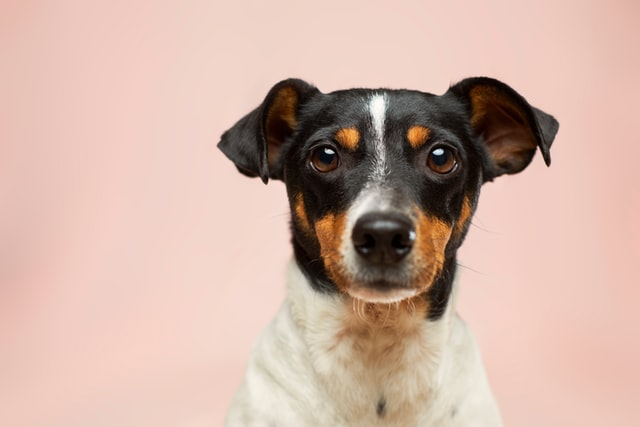
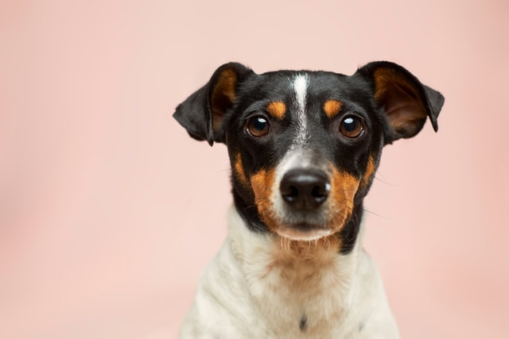

Discover many breeds of dogs
Here is a list:
- Chihuahua
- Daschund
- Husky
- Cocker Spaniel
- Golden Retriever
Here is a list:

 

The Golden Retriever is a British breed of retriever dog. It is characterised by a gentle and affectionate nature and a golden coat. It is commonly kept as a pet and is one of the most famous dog breeds.
The dachshund, also known as the badger dog, is a short-legged, long-bodied, hound-type dog breed. They may be smooth-haired, wire-haired, or long-haired.